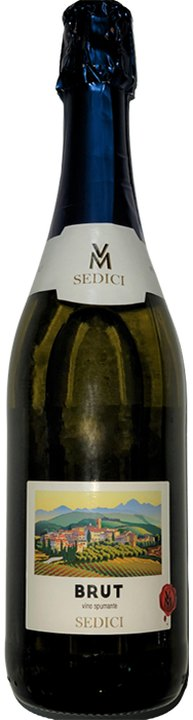
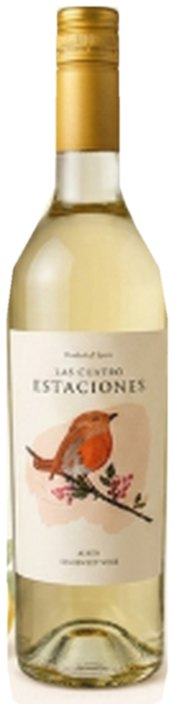
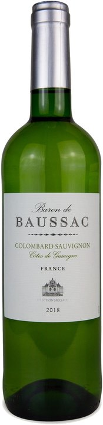
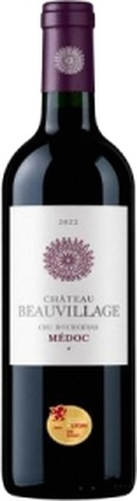
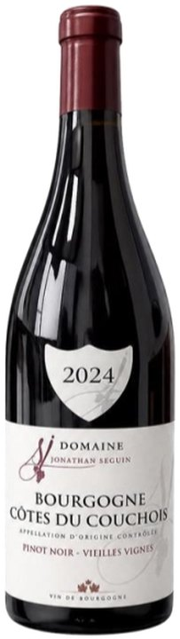

오늘 자리에 맞는 와인,
함께 골라 드려요
집에서 마실 한 병부터 30명 송년회, 거래처 명절 선물까지. 인원과 예산, 자리의 분위기만 알려 주시면 와인 구성부터 잔 준비까지 땡큐와인이 맞춰 드려요.
행사와인 인문학 강의 · 역사와 문화로 읽는 와인의 세계11월 27일(금) 19:00~21:30 · 강남역 라임스퀘어 · 박찬준 대표님(아시아 와인 트로피 아시아 디렉터)코르크매치에서 보고 신청하기 →




요즘 모임에서 가장 많이 찾으시는 와인들이에요.
세 가지만 알려 주시면 돼요
자리를 알려 주세요
인원, 날짜, 예산, 그리고 어떤 자리인지. 식사가 중심인지, 와인이 주인공인지에 따라 병 수와 구성이 달라져요.
구성과 견적을 받아 보세요
1인 1병과 2인 1병, 잔 포함과 잔 미포함처럼 두세 가지를 나란히 비교할 수 있게 정리해 드려요.
받으시는 방법을 정해요
매장 픽업, 행사장 배송, 잔 대여 시 수거까지. 기업·단체는 세금계산서를 발행해 드려요.
예산을 말씀해 주시면
그 안에서 가장 좋은 구성을 찾아요
가격이 확실한 와인은 와인 목록에 적어 두었어요. 나머지는 수입사 행사와 입고 시기에 따라 자주 바뀌어서 1:1 카카오톡으로 안내드려요.
- 데일리
- 여러 병 쓰는 모임집에서 편하게, 모임에서 여러 병 쓰기 좋은 와인
- 모임 · 선물
- 한 병도 손색없는 와인호텔에 납품되는 와인, 선물로 건네도 좋은 한 병
- 특별한 날
- 샴페인 · 부르고뉴 · 나파밸리기념일, 특별한 손님이 오는 자리
- 프리미엄
- 보르도 5대 샤토 · 빈티지 샴페인VIP 선물, 이야기가 있는 한 병
요즘 매장에 있는 와인,
글로 먼저 만나 보세요
와인 소개와 와인 이야기를 블로그에 꾸준히 올려요. 발행한 글은 사이트에서도 그대로 읽을 수 있어요.
 모임·선물
모임·선물주최자의 두통을 줄여 드리는 홈파티 와인 6병
땡큐와인이 엄선한 A안·B안 리스트
모임을 여는 주최자의 고민을 덜어 드리려고 땡큐와인이 엄선한 홈파티 와인 6병 리스트 두 가지예요. A안은 스파클링·화이트·로제·레드 2병·디저트 와인의 클래식 구성, B안은 화이트 2병을 넣은 프랑스 중심 구성이에
 와인 소개
와인 소개와인 메달 스티커 믿어도 될까?
100점 만점 와인 점수와 국제 품평회 메달 기준 정리
와인병에 붙은 금색, 은색 메달 스티커. 한 번쯤 눈길이 가셨죠?
 모임·선물
모임·선물모임 와인 추천 4가지
송년회에 인기 많은 가성비 와인, 성수 땡큐와인
연말이 다가오면 모임이 부쩍 많아지죠.
 모임·선물
모임·선물송년회 신년회 대용량 와인 추천
샴페인과 레드 3L·6L 조합 세 가지
연말이 다가오면서 송년회, 신년회 와인 문의가 부쩍 늘었어요. 그중 요즘 가장 재미있게 준비하고 있는 건 "큰 병" 문의예요. 열 명 넘게 모이는 자리에서 750ml 병을 여러 개 따는 대신, 3리터나 6리터짜리 한
 모임·선물
모임·선물르네 르캥 콜랭 샤르도네 4종
샤샤뉴 몽라쉐 1er 크뤼까지, 11월 한정 연말 특가
연말 모임에 화이트 와인 한 병을 제대로 준비하고 싶으시다면, 이번 달은 부르고뉴 샤르도네를 눈여겨보실 때입니다.
 와인 소개
와인 소개11월 27일(금) 강남역 라임스퀘어 '와인 인문학' 강의
박찬준 대표님 전국 순회 서울편, 땡큐와인
11월 27일 금요일 저녁, 땡큐와인이 준비한 '와인 인문학' 강의 장소가 정해졌어요.
궁금한 점
블로그에 소개한 와인을 사고 싶은데 어디서 살 수 있나요?
서울 성수동 땡큐와인 매장(성동구 성덕정길 109 2층)에서 살 수 있어요. 블로그에 소개한 와인은 대부분 매장에 있거나 주문할 수 있으니, 카카오톡으로 와인 이름을 보내 주시면 입고 상황과 가격을 바로 알려 드려요. 매장에서 바로 가져가시거나 미리 주문해 두실 수 있어요.
와인 가격은 어디서 보나요?
최근 수입사에서 받은 가격이 확실한 와인은 와인 목록과 와인별 페이지에 가격을 적어 두었어요. 나머지는 수입사 행사와 입고 시기에 따라 자주 바뀌어서 카카오톡으로 1:1 안내해 드려요. 어떤 자리인지, 무엇과 드실지, 편한 가격대만 알려 주시면 맞는 와인을 골라 가격과 함께 보내 드릴게요.
모임 와인은 몇 병을 준비하면 될까요?
한 병(750ml)은 보통 5~6잔이 나와요. 식사 중심으로 건배와 한두 잔이면 2~3명에 1병, 식사와 대화가 길어지는 자리면 2명에 1병, 와인이 주인공인 모임이면 1명에 1병을 추천해요. 인원만 알려 주시면 1인 1병과 2인 1병 두 가지로 나란히 견적을 드려요.
와인잔도 빌릴 수 있나요?
네. 인원만큼 와인잔을 준비해 드리고 행사가 끝나면 수거해요. 잔 포함과 잔 미포함으로 견적을 따로 드리니 비교해 보고 정하시면 돼요. 배송과 수거 방법은 견적 때 함께 안내드려요.